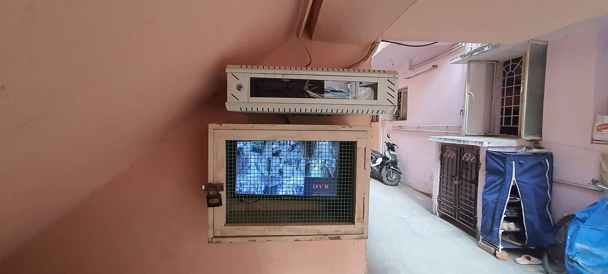
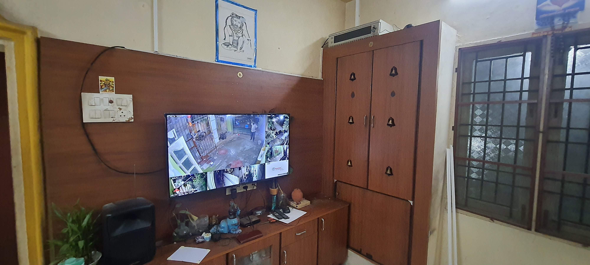
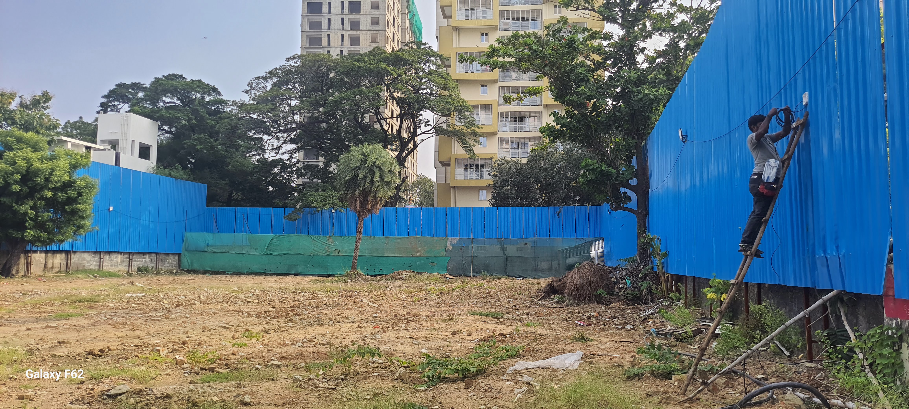
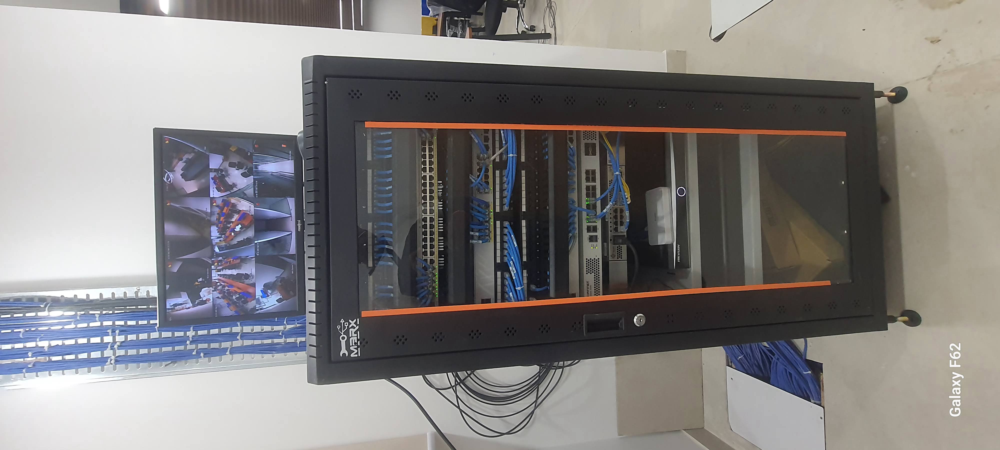
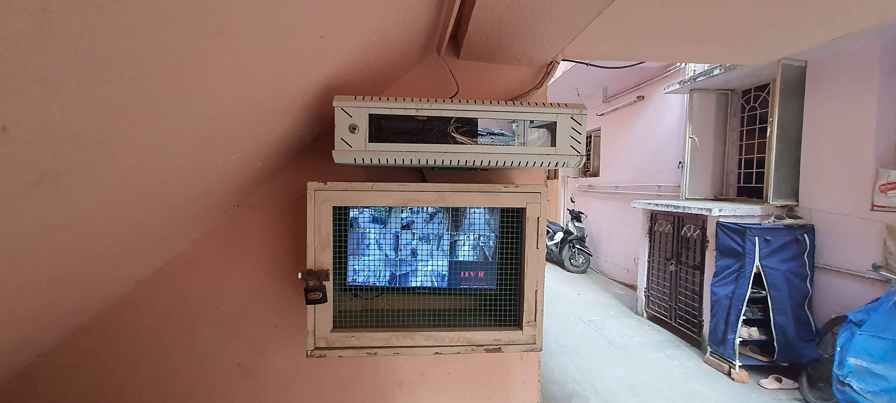
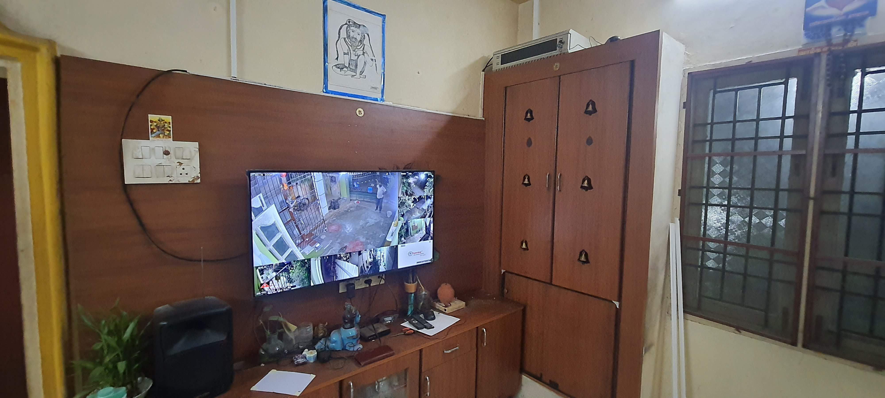
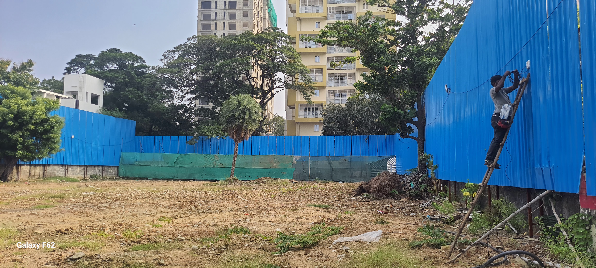
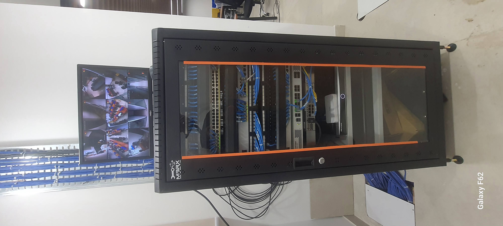

Tailored Surveillance Solutions: For Every Home and Business
Paras Enterprises provides advanced surveillance solutions designed to meet the diverse needs of both domestic and commercial clients. From simple home monitoring to complex enterprise security integrations, we deliver comprehensive, AI-powered systems for complete peace of mind.
Smart Security for Homes & Small Businesses
For our domestic clients (households, shops, flats, apartments) and small businesses, we offer highly cost-effective, user-friendly, WiFi-based camera solutions with integrated AI features. Our flexible approach allows you to fulfill security requirements starting from just one camera.
- 🌐 WiFi Cameras: Available for both indoor and outdoor use, providing flexible placement.
- ✨ Advanced AI Features: Built-in intelligence for smart detection and alerts.
- 💾 SD Card Recording: Local storage for reliable footage capture.
- ☁️ Optional Cloud Recording: Secure, subscription-based cloud storage for enhanced accessibility and backup.
Integrated Security Systems for Enterprises
For our commercial segment, we provide entire, turn-key solutions tailored to complex business needs. Our offerings go beyond cameras to include full integration of various security and network components.
- 📡 Network Integration: Seamless integration of access points, data, and voice connections.
- 🔒 Access Control Systems: Robust solutions for managing entry and exit points.
- 👆 Biometric Solutions: Advanced biometric systems for secure authentication.
- 📹 IP Cameras: High-resolution IP cameras in various resolutions, equipped with many advanced AI features for superior monitoring and analytics.
Comprehensive Camera Technologies
Regardless of the segment, Paras Enterprises offers a wide array of advanced CCTV technologies to suit diverse environmental and operational requirements, all equipped with smart features for optimal performance.
📶 WiFi Cameras
Versatile indoor and outdoor WiFi cameras, perfect for easy setup and wireless monitoring. Ideal for homes and small spaces.
- AI features for smart detection.
- SD card recording built-in.
- Optional subscription-based cloud recording.
📡 4G SIM Card Based Cameras
Reliable indoor and outdoor cameras using 4G connectivity, ideal for locations without traditional internet access.
- AI features for smart detection.
- SD card recording built-in.
- Optional subscription-based cloud recording.
☀️ Solar Powered 4G Cameras
Self-sufficient outdoor cameras with solar charging and 4G connectivity, perfect for remote or off-grid installations.
- AI features for smart detection.
- SD card recording built-in.
- Optional subscription-based cloud recording.
Our Seamless Turn-Key Process
Consult & Design
Custom system design based on your needs and budget.
Supply & Install
Professional installation and configuration.
Integrate AI
Intelligent analytics for proactive threat detection.
Maintain & Support
Ensuring your system runs smoothly long-term.
Core Technology & Services
- 📷IP & CCTV Cameras: High-resolution, reliable cameras forming the foundation of our custom-designed systems.
- 📊Advanced Video Analytics: Intelligent software that reduces the burden on security personnel by providing actionable insights.
- 🧠Artificial Intelligence (AI): Proactive threat identification and smart monitoring with unparalleled accuracy and efficiency.
- ☁️Cloud-Based Solutions: Scalable, flexible, and cost-effective surveillance accessible from anywhere, at any time.
Why Our Approach Works
By managing the entire lifecycle of your security system, we eliminate complexity and deliver a solution that is perfectly tailored to your environment. You get a single point of accountability and a system guaranteed to perform.
Installation Highlights: Surveillance
 







Our expert team ensures seamless and efficient installation of all surveillance systems.
Revolutionary Zero-Maintenance Hard Water Treatment
Discover our "fix and forget" hard water softening solution. Using an innovative, natural vortex process, we treat hard water without chemicals, salt, or electricity, protecting your appliances and saving you money.
What Others Do
Traditional systems rely on salt, chemicals, and electricity. They require constant maintenance, waste water during regeneration, and often have high operational costs.
What We Do
Our system uses a natural vortex to physically restructure hardness minerals (magnesium and calcium). This prevents limescale formation permanently without altering TDS levels or adding anything to your water.
Unmatched Benefits: A Quick Comparison
No Maintenance
No Chemicals
No Water Waste
No Salt
No Electricity
Engineered for Extreme Conditions
Our technology is proven to perform where others fail, efficiently treating water with extremely high levels of Total Dissolved Solids (TDS) and hardness.
Installation Highlights: Water Treatment
Our team ensures seamless integration for lasting water quality.
Our Foundation & Commitment
Meet Our Founder
Mr. Ramesh Raju
A trailblazing first-generation entrepreneur with a 20-year professional career and a transformative 7-year entrepreneurial odyssey. His unwavering passion lies in delivering meaningful solutions that uplift society.
An adept multilingual communicator, he connects effortlessly with people from all backgrounds.
Why Choose Paras Enterprises?
- ⭐ Expertise: Our skilled team ensures expert design, installation, and maintenance for every project.
- 💡 Innovation: We stay ahead of the curve, offering cutting-edge AI, Cloud, and vortex technologies.
- 🤝 Client-Centric: We prioritize your satisfaction, working within your budget without compromising quality.
- 🌱 Responsibility: Our solutions are cost-effective and environmentally conscious, especially our eco-friendly water softeners.
What Our Clients Say
"Paras Enterprises transformed our office security. Their turn-key solution was seamless, and the AI features give us incredible peace of mind. Highly recommend!"
- Mr. S. Kumar, Business Owner
"The zero-maintenance water softener is a game-changer! No more salt bags or constant checks. Our appliances are scale-free, and the water quality is noticeably better."
- Mrs. A. Devi, Homeowner
Our Valued Clientele
Our diverse clientele spans homeowners seeking optimal water quality and home security, businesses requiring comprehensive surveillance and efficient water treatment, educational institutions ensuring student safety, healthcare facilities upholding hygiene standards, and industrial sectors optimizing operations through advanced security and water softening solutions across Chennai and its surrounding areas.